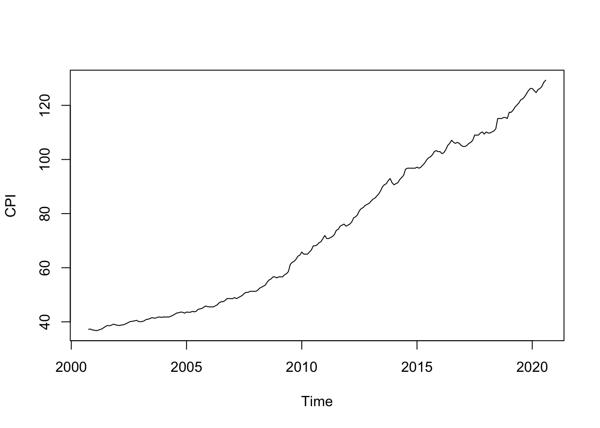
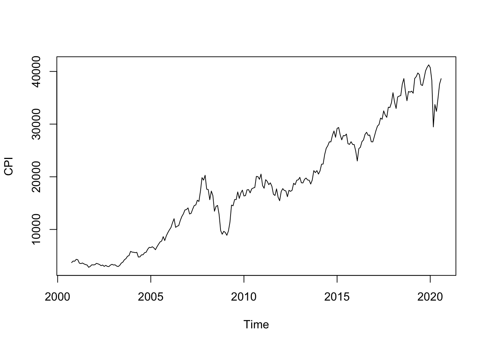
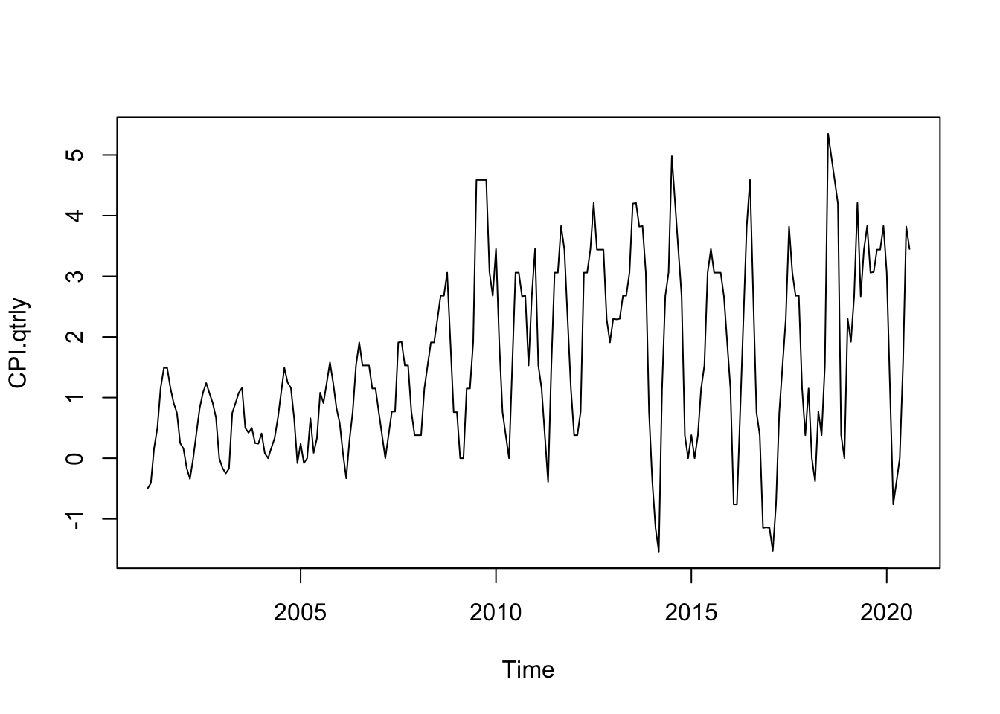
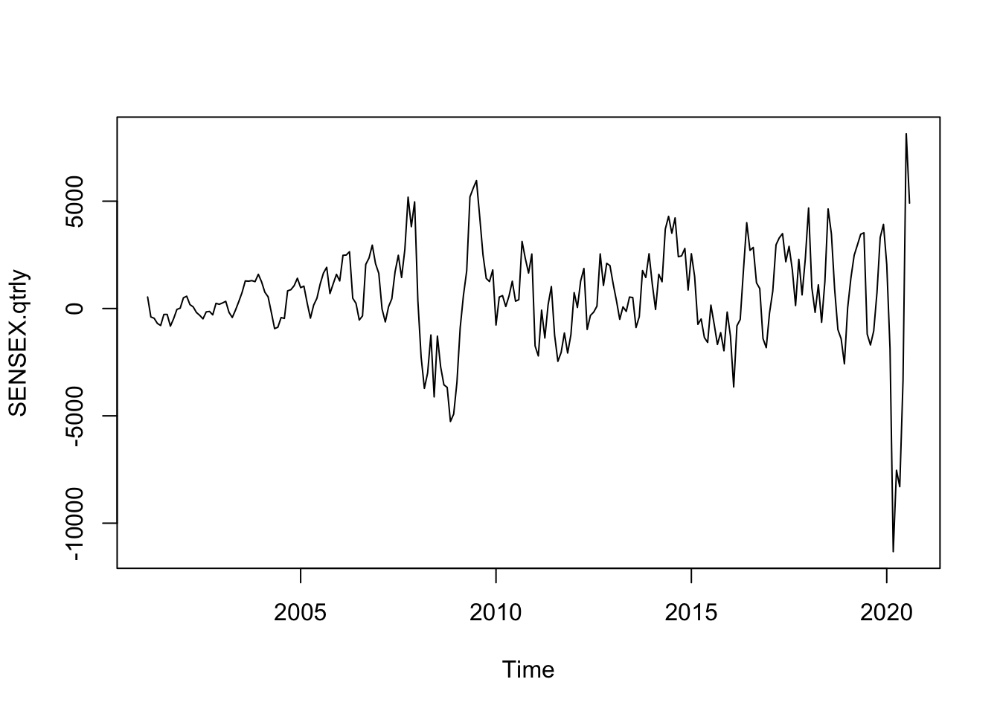

dat.gold <- read.csv("GoldUP.csv")
CPI.dat <- dat.gold$CPI
SENSEX.dat <- dat.gold$Sensex
CPI.dat <- ts(CPI.dat, start = c(2000,10), frequency = 12)
SENSEX.dat <- ts(SENSEX.dat, start = c(2000,10), frequency = 12)Data Experimentation (Pre Report)
CPI Vs SENSEX Data
Loading the data:
Data Summary:
We have monthly data from October 2000 to August 2020.
## CPI Data
summary(CPI.dat) Min. 1st Qu. Median Mean 3rd Qu. Max.
36.73 45.19 68.47 73.37 101.37 129.30 # SENSEX Data
summary(SENSEX.dat) Min. 1st Qu. Median Mean 3rd Qu. Max.
2812 8263 17465 18172 26662 41254 Firstly, let’s individually analyse both the covariates as individual time series:
CPI Data:
library(tseries)Warning: package 'tseries' was built under R version 4.3.3Registered S3 method overwritten by 'quantmod': method from as.zoo.data.frame zoo# Test for Stationarity plot.ts(CPI.dat, ylab = "CPI")
adf.test(CPI.dat)Augmented Dickey-Fuller Test data: CPI.dat Dickey-Fuller = -2.1731, Lag order = 6, p-value = 0.5031 alternative hypothesis: stationarySENSEX Data
# Test for Stationarity plot.ts(SENSEX.dat, ylab = "CPI")
adf.test(SENSEX.dat)Augmented Dickey-Fuller Test data: SENSEX.dat Dickey-Fuller = -2.9821, Lag order = 6, p-value = 0.1628 alternative hypothesis: stationary
As we can see in the case of both our covariates, their individual time series is not stationary (by the Augmented Dickey-Fuller Test).
Lastly, before diving into any data transformations or modeling, I wish to try out the Granger test on the two time series:
library(lmtest)Loading required package: zoo
Attaching package: 'zoo'The following objects are masked from 'package:base':
as.Date, as.Date.numericgrangertest(CPI.dat, SENSEX.dat)Granger causality test
Model 1: SENSEX.dat ~ Lags(SENSEX.dat, 1:1) + Lags(CPI.dat, 1:1)
Model 2: SENSEX.dat ~ Lags(SENSEX.dat, 1:1)
Res.Df Df F Pr(>F)
1 235
2 236 -1 7.3841 0.00707 **
---
Signif. codes: 0 '***' 0.001 '**' 0.01 '*' 0.05 '.' 0.1 ' ' 1grangertest(SENSEX.dat, CPI.dat)Granger causality test
Model 1: CPI.dat ~ Lags(CPI.dat, 1:1) + Lags(SENSEX.dat, 1:1)
Model 2: CPI.dat ~ Lags(CPI.dat, 1:1)
Res.Df Df F Pr(>F)
1 235
2 236 -1 0.8949 0.3451As evident from the Granger test, we can use CPI to predict SENSEX directly however, the same cannot be said about SENSEX serving as a predictor for CPI. This motivates us to consider some transformations on our data to be able to arrive at a better fitting model to us SWAP on.
Growth Rate
Firstly, consider a growth rate analysis:
# For CPI
CPI.qtrly <- diff(CPI.dat, lag = 4)
plot.ts(CPI.qtrly)
adf.test(CPI.qtrly)Warning in adf.test(CPI.qtrly): p-value smaller than printed p-value
Augmented Dickey-Fuller Test
data: CPI.qtrly
Dickey-Fuller = -6.5265, Lag order = 6, p-value = 0.01
alternative hypothesis: stationary# For SENSEX
SENSEX.qtrly <- diff(SENSEX.dat, lag = 4)
plot.ts(SENSEX.qtrly)
adf.test(SENSEX.qtrly)Warning in adf.test(SENSEX.qtrly): p-value smaller than printed p-value
Augmented Dickey-Fuller Test
data: SENSEX.qtrly
Dickey-Fuller = -4.2302, Lag order = 6, p-value = 0.01
alternative hypothesis: stationaryWe observe that differencing at a quaterly time gap does not give us a stationary time series. Hence, analysing the growth rate need not be the best way to go forward.
To further experiment on this we consider a bi-directional causality hypothesis with an AR(4) model on either co-variate.
# Preparing the data
Y <- CPI.dat
X <- SENSEX.dat
# Computing Lags
Y.lag1 <- lag(Y)
X.lag1 <- lag(X)
Y.lag2 <- lag(Y, k=2)
X.lag2 <- lag(X, k=2)
Y.lag3 <- lag(Y, k=3)
X.lag3 <- lag(X, k=3)
Y.lag4 <- lag(Y, k=4)
X.lag4 <- lag(X, k=4)
# Fixing the lags
X <- X[1:(length(X)-5)]
X.lag1 <- X.lag1[2:(length(X.lag1)-4)]
X.lag2 <- X.lag2[3:(length(X.lag2)-3)]
X.lag3 <- X.lag3[4:(length(X.lag3)-2)]
X.lag4 <- X.lag4[5:(length(X.lag4)-1)]
Y <- Y[1:(length(Y)-5)]
Y.lag1 <- Y.lag1[2:(length(Y.lag1)-4)]
Y.lag2 <- Y.lag2[3:(length(Y.lag2)-3)]
Y.lag3 <- Y.lag3[4:(length(Y.lag3)-2)]
Y.lag4 <- Y.lag4[5:(length(Y.lag4)-1)]
## Direction 1
m1 <- lm(Y~X+Y.lag1+Y.lag2+Y.lag3+Y.lag4)
summary(m1)
Call:
lm(formula = Y ~ X + Y.lag1 + Y.lag2 + Y.lag3 + Y.lag4)
Residuals:
Min 1Q Median 3Q Max
-3.3674 -0.2217 0.0182 0.2710 1.7524
Coefficients:
Estimate Std. Error t value Pr(>|t|)
(Intercept) -7.024e-03 1.530e-01 -0.046 0.9634
X 2.304e-06 1.255e-05 0.184 0.8545
Y.lag1 1.206e+00 6.603e-02 18.269 <2e-16 ***
Y.lag2 -2.401e-01 1.034e-01 -2.321 0.0212 *
Y.lag3 1.057e-01 1.032e-01 1.024 0.3068
Y.lag4 -7.629e-02 6.553e-02 -1.164 0.2456
---
Signif. codes: 0 '***' 0.001 '**' 0.01 '*' 0.05 '.' 0.1 ' ' 1
Residual standard error: 0.587 on 228 degrees of freedom
Multiple R-squared: 0.9996, Adjusted R-squared: 0.9996
F-statistic: 1.083e+05 on 5 and 228 DF, p-value: < 2.2e-16# Directrion 2
m2 <- lm(X~Y+X.lag1+X.lag2+X.lag3+X.lag4)
summary(m2)
Call:
lm(formula = X ~ Y + X.lag1 + X.lag2 + X.lag3 + X.lag4)
Residuals:
Min 1Q Median 3Q Max
-4236.0 -526.9 -77.2 347.2 8286.1
Coefficients:
Estimate Std. Error t value Pr(>|t|)
(Intercept) -859.66540 299.42745 -2.871 0.00448 **
Y 31.40623 9.71446 3.233 0.00141 **
X.lag1 0.89675 0.06602 13.582 < 2e-16 ***
X.lag2 0.03389 0.08782 0.386 0.69991
X.lag3 0.03255 0.08785 0.371 0.71130
X.lag4 -0.04851 0.06419 -0.756 0.45056
---
Signif. codes: 0 '***' 0.001 '**' 0.01 '*' 0.05 '.' 0.1 ' ' 1
Residual standard error: 1160 on 228 degrees of freedom
Multiple R-squared: 0.9888, Adjusted R-squared: 0.9886
F-statistic: 4031 on 5 and 228 DF, p-value: < 2.2e-16